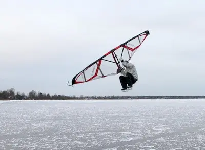

It all started in the 1960s, when American Walter Woodward patented hydrofoil - a hydrofoil that lifts boats above water. But the technology was complicated, and it didn't become a mass sport.
In the 1980s, windsurfing enthusiasts began experimenting with foyle boards. That's when the first prototypes of hand-powered fenders appeared:
Jim Drake and Uli Stanciu developed a rigid, fan-like wing. In 1982, their friend, windsurfer Pete Cabrina, tested it at a competition in Kailua. A photo of the yellow wing made it into magazines, but the idea was considered strange: “Why hold the sail in your hands?”.
Roland Le Baye from France tried to create a “sail without a mast”, but the technology of the 1980s did not allow it to be light.
Sami Turonen from Finland came up with the Skimbat (Kitewing), a compact wing for snow and ice, the “brother” of the wing.



The Surfer Who Didn't Want to Paddle (2016)
It's been years. There was a guy named Alex Aguera, a windsurfing fanatic, living in Hawaii. One day his friend, Kai Lenny (party boy and surf pro), said: “Listen, can you make a board that flies by itself? No sail, just by the waves?”. Alex was fired up. He screwed an underwater wing to the board and tried to “catch” the energy of the ocean. It was crooked, but cool!
But he still had to paddle. And that's when Flash Austin came on the scene.
A madman with a “beta wing” and a board (2018)
Flash is a champion kitesurfer and part time “mad professor”. In 2018, he took a weird wing, SUP-foil board and declared, “What if we combined it?”. Friends twisted at his temples, but Flash persevered, dragging his “constructor” to the beaches of Maui.
And one day... it took off. The fact was clear: wing in hand + foil under the board = magic!
The social networks were buzzing: “It's a new sport!”.
Inflatable Wings and Viral Explosion (2019)
The story was picked up by Ken Winner (yes, the last name obliges). He figured out how to make the wing inflatable - lightweight and comfortable. Duotone, Naish and other brands rushed to produce kits. And then Kai Lenny's “wing breakthrough” happened.
In April 2019, Kai posted a video of himself soaring over the waves with a wing in his hands and captioned it, “This is Wing Surfing.” The video blew up YouTube. Everyone rushed to buy wings and manufacturers rushed to compete to see who was cooler. By the end of the year, wingfoil was everywhere from California to Australia.
Wing Center Dahab


Want to know more details? Check out the sections:
“Our Water Area” - there is a map of Dahab's water area.
“Learning Stages” - here you can familiarize yourself with the learning process